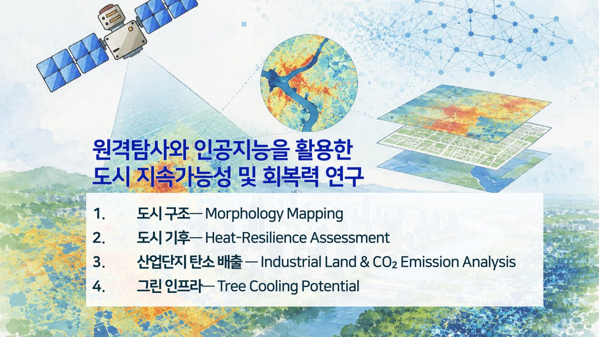

Global patterns of urban heat shaped by climate and morphology
A global analysis of how urban morphology and climate jointly shape urban heat patterns.
DOI: 10.1038/s41467-026-73062-8
Image slot included
Publications
Publications are organized in one page. Each item includes a thumbnail area and DOI-link field for easy maintenance.
Showing all publications
A global analysis of how urban morphology and climate jointly shape urban heat patterns.
Deep learning framework for simultaneous air-pollutant prediction and co-exposure quantification.

AI-driven hourly mapping of urban thermal stress and targeted cooling actions.

A 10-m global dataset tracking industrial land use in more than 1,000 large cities.
Quantifies pedestrian-level cooling and building energy-saving potential of roof strategies.

Analyzes directional patterns in surface urban heat island footprints.
Improves all-sky hourly land surface temperature estimation using temporal cloud-radiation interactions.

Uses local climate zone mapping to examine 3D urban growth patterns.
Assesses unequal impacts of industrial land expansion on growth and CO₂ emissions.
Develops explainable AI for analyzing spatiotemporal public-health risk factors.
Evaluates roof-based mitigation strategies under current and future climate conditions.
Combines hazard and real-time population data to assess daytime and nighttime heat risk.
Compares CNNs and random forest for local climate zone classification with Landsat images.